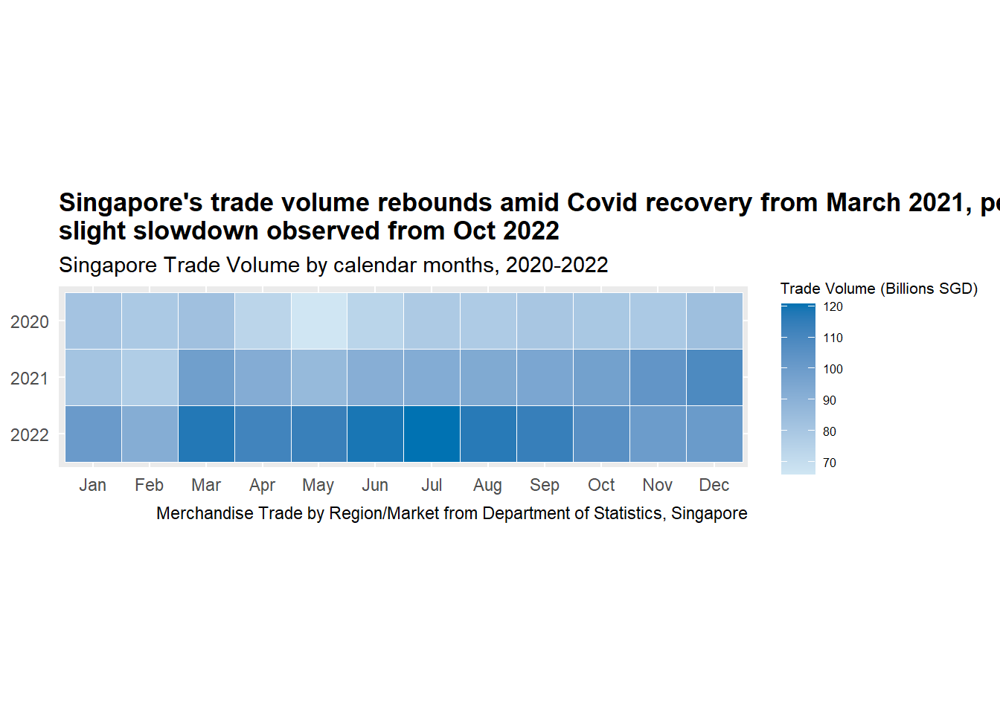
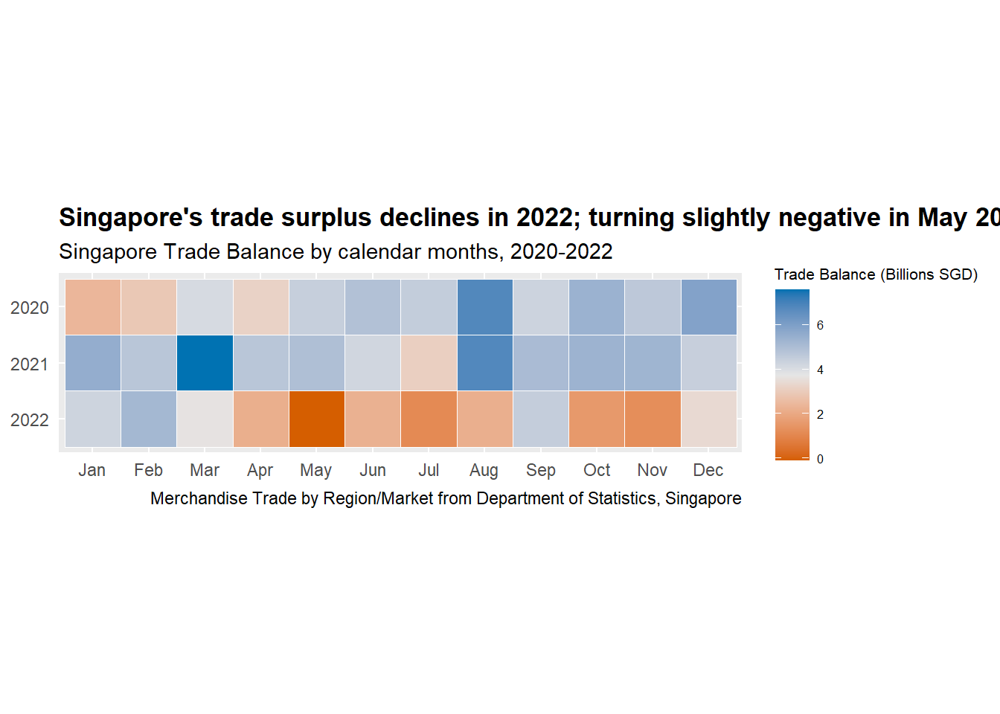
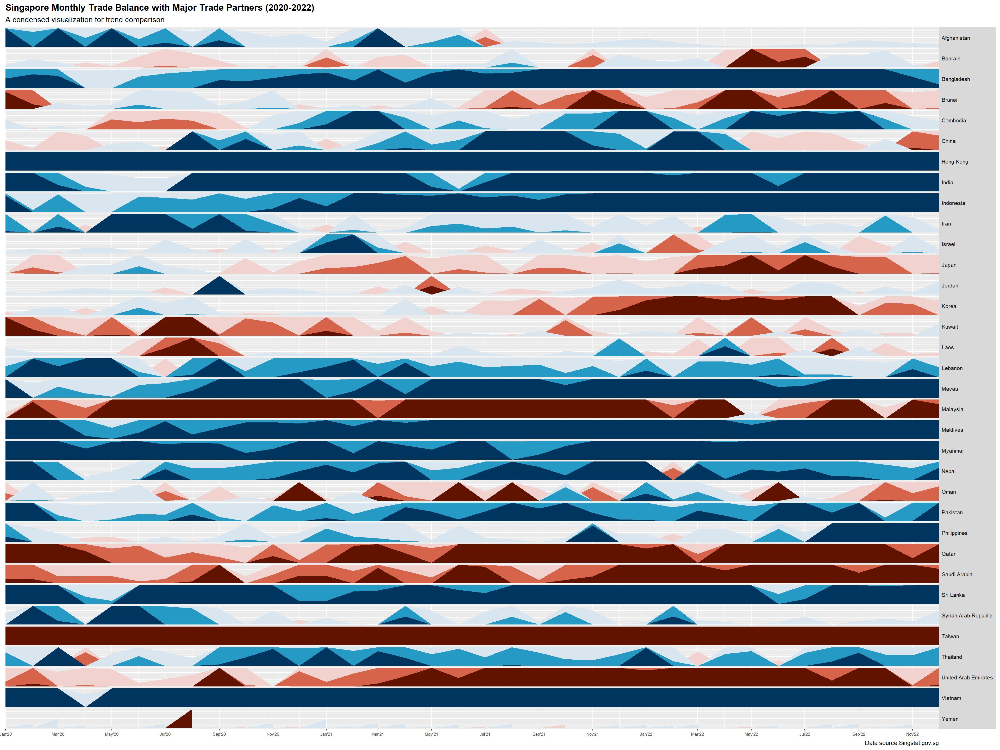
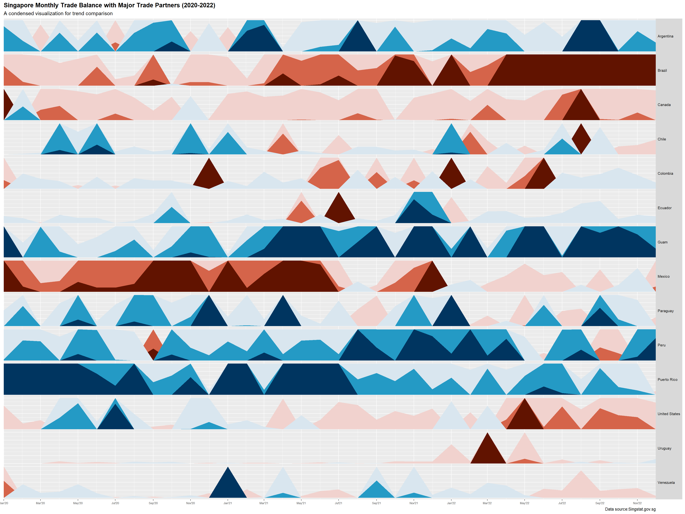
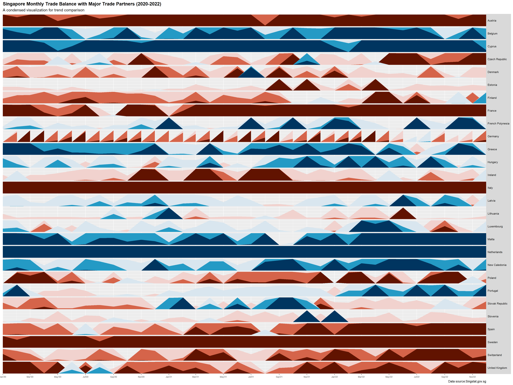
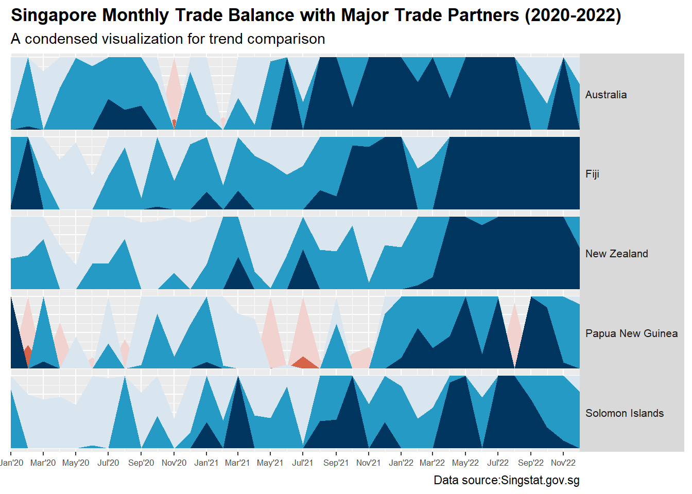

# install.packages("remotes")
remotes::install_github("nsgrantham/ggbraid")Skipping install of 'ggbraid' from a github remote, the SHA1 (e1018d7a) has not changed since last install.
Use `force = TRUE` to force installationEda Chang
With the help of analysis visualisation techniques, we are to uncover the impact of COVID-19 and the global economic and political dynamics of 2022 on Singapore’s bi-lateral trade (i.e. import, export and trade balance).
As Singaporeans, we have always been told that Singapore’s trading success is due to its naturally deep harbor and strategic location, which connects India, China, and the Indonesian archipelago.
Furthermore, as a free trader with a small and open economy that is heavily reliant on trade, Singapore is more competitive than many of its neighbors in carrying out such activities.
Therefore, we hope to learn how the influence of COVID-19 and global economic and political dynamics will affect Singapore’s bi-lateral commerce in this activity.
The dataset used for this experiment was obtained from Singstat.gov.sg and provides information on Goods Imports and Exports by Region / Market.
The study period will be from January 2020 to December 2022 for the purposes of this exercise.
Ensure following packages are installed.
Skipping install of 'ggbraid' from a github remote, the SHA1 (e1018d7a) has not changed since last install.
Use `force = TRUE` to force installationpackages = c('readxl', 'datawizard', 'crosstalk', 'tidyr', 'lubridate','tidyverse', 'plotly', 'ggbraid','directlabels','cowplot','ggplot2','ggHoriPlot')
for(p in packages){
if(!require(p,character.only = T)){
install.packages(p)
}
library(p,character.only = T)
}Loading required package: readxlLoading required package: datawizardLoading required package: crosstalkLoading required package: tidyrLoading required package: lubridateLoading required package: timechange
Attaching package: 'lubridate'The following objects are masked from 'package:base':
date, intersect, setdiff, unionLoading required package: tidyverse── Attaching packages ─────────────────────────────────────── tidyverse 1.3.2 ──
✔ ggplot2 3.4.0 ✔ dplyr 1.0.10
✔ tibble 3.1.8 ✔ stringr 1.5.0
✔ readr 2.1.3 ✔ forcats 0.5.2
✔ purrr 1.0.0
── Conflicts ────────────────────────────────────────── tidyverse_conflicts() ──
✖ lubridate::as.difftime() masks base::as.difftime()
✖ lubridate::date() masks base::date()
✖ dplyr::filter() masks stats::filter()
✖ lubridate::intersect() masks base::intersect()
✖ dplyr::lag() masks stats::lag()
✖ lubridate::setdiff() masks base::setdiff()
✖ lubridate::union() masks base::union()
Loading required package: plotly
Attaching package: 'plotly'
The following object is masked from 'package:ggplot2':
last_plot
The following object is masked from 'package:stats':
filter
The following object is masked from 'package:graphics':
layout
Loading required package: ggbraid
Loading required package: directlabels
Loading required package: cowplot
Attaching package: 'cowplot'
The following object is masked from 'package:lubridate':
stamp
Loading required package: ggHoriPlotFirst, we use the read_csv() function of the readr package to import Import & Export and Regions dataset into the R environment.
T1 <- read_xlsx("C:/Users/Eda/Desktop/MITB/Y3S1/ISSS608 Visual Analytics and Applications/edachang/ISSS608-VA1/Take-Home_Ex/Take-Home_Ex04/data/outputFile.xlsx", sheet = "T1", range = "A1:AL120")
T2 <- read_xlsx("C:/Users/Eda/Desktop/MITB/Y3S1/ISSS608 Visual Analytics and Applications/edachang/ISSS608-VA1/Take-Home_Ex/Take-Home_Ex04/data/outputFile.xlsx", sheet = "T2", range = "A1:AL92")
regions <- read_xlsx("C:/Users/Eda/Desktop/MITB/Y3S1/ISSS608 Visual Analytics and Applications/edachang/ISSS608-VA1/Take-Home_Ex/Take-Home_Ex04/data/countries_region.xlsx")read.csv() function from base R has the same functionality as read csv().
Note: read csv() function is preferred over read.csv() because it preserves the whole variable name. read.csv() replaces any spaces in variable names with a period (.), where the names of the variables will be changed.
As we will only be looking at Jan 2020 to Dec 2022, we perform the following filters on the dataset.
Filter only countries dataset
Remove (Thousand Dollars) from data source
sgimport_ctry <- T1 %>%
#remove the first 7 rows, which are Total and non-countries
filter(!row_number() %in% c(1:7)) %>%
#remove the '(Thousand Dollars)' string from column Data Series and call it Countries
mutate(Countries = str_remove(`Data Series`,
" \\(Thousand Dollars\\)"),
.after = `Data Series`) %>%
#remove 'Data Series' column
select(-`Data Series`)
sgexport_ctry <- T2 %>%
#remove the first 7 rows, which are Total and non-countries
filter(!row_number() %in% c(1:7)) %>%
#remove the '(Thousand Dollars)' string from column Data Series and call it Countries
mutate(Countries = str_remove(`Data Series`,
" \\(Thousand Dollars\\)"),
.after = `Data Series`) %>%
#remove 'Data Series' column
select(-`Data Series`) Pivot_longer to transpose dates into Year & Month.
Left join both import & export dataset, clean the following countries to match with Regions.
Sum up both import & export
`summarise()` has grouped output by 'Month_Year'. You can override using the
`.groups` argument.`summarise()` has grouped output by 'Countries'. You can override using the
`.groups` argument.Find the top 15 countries in all region
# A tibble: 15 × 2
Countries sum_TV
<chr> <dbl>
1 China 475.
2 Malaysia 385.
3 Taiwan 289.
4 Hong Kong 238.
5 Indonesia 184.
6 Korea 172.
7 Japan 169.
8 Thailand 109.
9 Vietnam 80.9
10 India 77.4
11 Philippines 69.4
12 United Arab Emirates 64.9
13 Saudi Arabia 32.4
14 Cambodia 26.0
15 Qatar 21.7`summarise()` has grouped output by 'Month_Year', 'Year'. You can override
using the `.groups` argument.# A tibble: 14 × 2
Countries sum_TV
<chr> <dbl>
1 United States 341.
2 Brazil 26.2
3 Mexico 16.6
4 Canada 11.5
5 Puerto Rico 3.92
6 Guam 1.52
7 Colombia 1.1
8 Argentina 1.06
9 Chile 1.04
10 Ecuador 0.5
11 Peru 0.44
12 Uruguay 0.26
13 Paraguay 0.03
14 Venezuela 0.02`summarise()` has grouped output by 'Month_Year', 'Year'. You can override
using the `.groups` argument.# A tibble: 15 × 2
Countries sum_TV
<chr> <dbl>
1 Germany 68.1
2 France 63.2
3 Netherlands 54.1
4 Switzerland 47.1
5 United Kingdom 46.2
6 Belgium 27.7
7 Italy 22.8
8 Ireland 8.3
9 Malta 7.87
10 Spain 7.47
11 Sweden 6.24
12 Greece 5.6
13 Czech Republic 4.6
14 Austria 4.45
15 Denmark 3.85`summarise()` has grouped output by 'Month_Year', 'Year'. You can override
using the `.groups` argument.# A tibble: 5 × 2
Countries sum_TV
<chr> <dbl>
1 Australia 80.2
2 New Zealand 14.4
3 Papua New Guinea 3.88
4 Fiji 1.36
5 Solomon Islands 0.24`summarise()` has grouped output by 'Month_Year', 'Year'. You can override
using the `.groups` argument.

::: panel-tabset
Warning: Using the `size` aesthetic in this geom was deprecated in ggplot2 3.4.0.
ℹ Please use `linewidth` in the `default_aes` field and elsewhere instead.



https://nsgrantham.github.io/ggbraid/
https://www.mti.gov.sg/Trade/Multilateral-and-Regional-Forums
https://tradingeconomics.com/singapore/exports
https://www.singstat.gov.sg/modules/infographics/singapore-international-trade